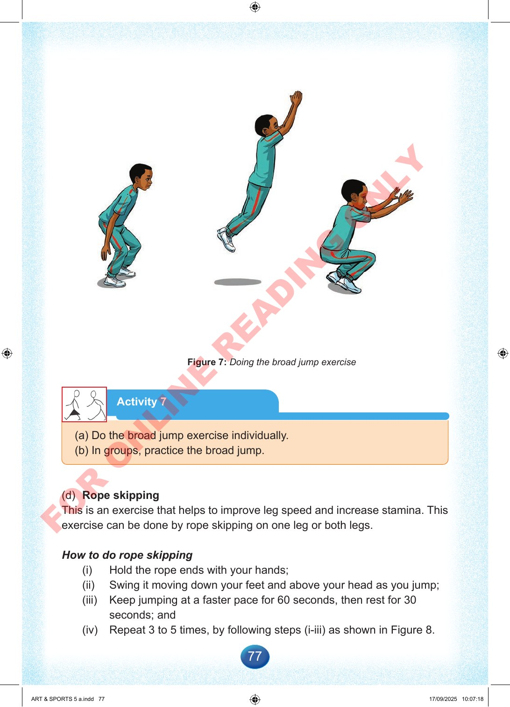

77
Figure
7:
Doing
the
broad
jump
exercise
Activity
7
(a)
Do
the
broad
jump
exercise
individually.
(b)
In
groups,
practice
the
broad
jump.
(d)
Rope
skipping
This
is
an
exercise
that
helps
to
improve
leg
speed
and
increase
stamina.
This
exercise
can
be
done
by
rope
skipping
on
one
leg
or
both
legs.
How
to
do
rope
skipping
(i)
Hold
the
rope
ends
with
your
hands;
(ii)
Swing
it
moving
down
your
feet
and
above
your
head
as
you
jump;
(iii)
Keep
jumping
at
a
faster
pace
for
60
seconds,
then
rest
for
30
seconds;
and
(iv)
Repeat
3
to
5
times,
by
following
steps
(i-iii)
as
shown
in
Figure
8.
ART
&
SPORTS
5
a.indd
77
ART
&
SPORTS
5
a.indd
77
17/09/2025
10:07:18
17/09/2025
10:07:18
F
O
R
O
N
L
I
N
E
R
E
A
D
I
N
G
O
N
L
Y